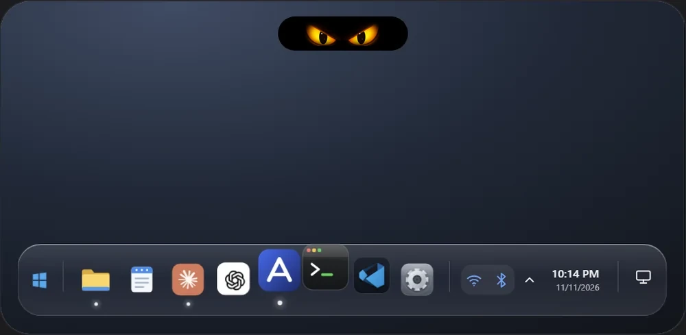

Dock untuk Windows yang bisa kamu atur sendiri
Grump menaruh aplikasi yang sedang berjalan dalam Dock di bawah layar. Kamu bisa melihat jendelanya dulu sebelum memilih, termasuk saat satu aplikasi membuka beberapa jendela.

Cara melihat preview jendela
- Buka beberapa jendela aplikasi, misalnya dua dokumen Notepad.
- Arahkan kursor ke ikon aplikasinya di Dock. Preview setiap jendela yang terdeteksi muncul berdampingan.
- Klik preview jendela yang ingin dibuka. Selama kursor berada di ikon atau area preview, kartu tetap terlihat.
Preview mengikuti jendela yang disediakan Windows. Beberapa aplikasi atau jendela yang dilindungi sistem bisa menampilkan ikon atau bidang kosong alih-alih isi jendela.
Atur ukuran dan jaraknya
Buka Preferences, lalu cari bagian Dock size. Di sana kamu bisa mengubah ukuran ikon, tinggi bar, panjang Dock, posisi, jarak dari bawah layar, dan Frost. Mulai dari setelan bawaan, lalu geser sedikit demi sedikit sampai Dock nyaman dipakai pada ukuran layarmu.
Kalau Dock tidak terlihat
Gerakkan kursor ke tepi bawah layar untuk memunculkannya jika auto-hide aktif. Periksa juga pengaturan Dock di Preferences. Saat aplikasi layar penuh aktif, perilakunya dapat berbeda sesuai pengaturan layar penuh dan cara Windows menampilkan aplikasi tersebut.
Coba sebelum mengunduh
Di demo Grump, kamu bisa melihat posisi notch dan Dock. Demo di browser adalah simulasi; preview jendela asli baru bekerja setelah Grump dipasang di Windows.